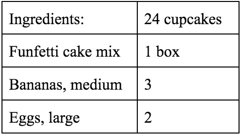
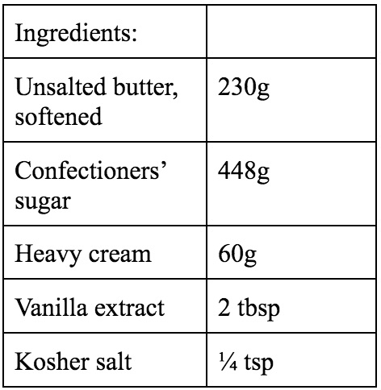

I'm a lover of all things food and a freelance photographer with a B.A. in English, Language, Literature and Culture, championing a desire to create understanding through stories and food.
My best friend and I have been hanging out a lot more than usual, and I know that may sound a bit odd and all considering we are best friends. But alas, we have the type of relationship where we can go weeks and sometimes even months without a visit or a simple text. I am not sure if this qualifies as a friendship for some people but for us, it works. Every so often she'll pop into my mind, and I'll send her a text.
Me: Hey dude, what's up?
Bestie: Oh, nothing much, just work. Hbu?
Me: Same, just work, are you busy tomorrow?
Bestie: No, I have tomorrow off. You?
Me: Oh! I do, too, wanna hang out?
Bestie: Yes, dude--see you tomorrow.
This is usually how our conversations go. Thrilling, I know. We are both very busy people; given our current age, it's not hard to tell—we are both 20 something year olds going to college and have part-time jobs. Not to mention the fact that my friend also has an almost one-year-old baby. Of course, we are distracted by life and only have time to catch up when life allows it. Things haven't been easy recently; circumstances have changed—the world we live in is a much different place, and my best friend's whole life has been turned upside-down to say the least. So, life called and told us it's time we do a bit of catching up.
I just went over to her house recently, where we sat on the couch and watched her daughter walk back and forth on the carpeted floor, picking up various objects and handing them to us as we talked about whatever crossed our minds. Recently, we have both been browsing Pinterest just to pass the time. She mentioned to me that I had just repinned one of her pins. I didn't recall, and I asked her which one. It happened to be for a recipe on how to make Funfetti banana muffins. The lightbulb went off in my head, and I exclaimed, "Oh, yeah!! I just happened to see it pop-up and thought it sounded so good! I want to try and make them!" She laughed at me and said, "I think I have everything we need to make them! If you want…" I was shocked. I mean, what are the chances? Of course, they are just Funfetti muffins, but at this time, they were much more than that.
Her daughter following us into the kitchen plops down on the floor and stares up at us as we gather the ingredients for the recipe;
Bake at 350 degrees farenheit for 12 minutes.
It seemed simple enough. So we began mashing the bananas and whisking the eggs in separate bowls, only to add them into another bowl containing the Funfetti cake mix. We continued the process of mixing all our ingredients together until they formed the resemblance of a dough. Taking a cupcake pan, we lined each crevice with a liner, scooping a half a cup of the mixture into the lined crevices. Once filled, we popped it into the oven and waited the 12 minutes before removing them from the heat and letting them cool.
We decided that we'd go for a drive—life's been hard on my friend recently, and her daughter hasn't been sleeping well. Driving puts her daughter to sleep and gives her the chance to let off some steam. So we drove around town and out into the countryside where we continued our talk about life. Soon we arrived back at her house with her daughter sound asleep in her car seat. We walk inside the door of her home, only to be greeted with the aroma of freshly baked banana muffins. Someone else walks out from the hall doorway and greets us, "Oh! You're home," he says, "I was just about to leave, but I was wondering what these muffins are for, they smell bomb." My friend looks at him and then back at me before she answers—saying that we had found a recipe on Pinterest and decided to make them, but before she could finish her sentence, he leaves. It was as if he was never there.
Together we make our way with her daughter's car seat in hand over to the sheet pan that contains the muffins, we look down, and they are all still there, not one missing. She sets down her daughter's car seat and reaches out for a muffin. I, too, grab a muffin and take a bite. A sweet, soft buttery vanilla cake loaded with rainbow sprinkles and a hint of banana. Simple and nostalgic. We look at each other in agreement; these muffins were delicious. But they were more than just a delicious muffin; they were a distraction that offered my friend an escape from reality.
For a pleasant surprise, top it off with some vanilla buttercream like we did!
Instructions:
With a handheld or stand mixer, beat the butter on medium speed until creamy. Gradually add in confectioners' sugar and heavy cream until fully incorporated. Add the vanilla extract and salt, mix on low speed for 30 seconds before increasing the speed to medium-high speed for 2 minutes. Use the buttercream immediately or cover tightly and store in the refrigerator for up to 1 week.
Enjoy your escape from reality!
I am a small-town girl who grew up in an agricultural community. I had always dreamed of moving to a big city where I could find new adventure, and after obtaining my A.A, I did just that—I moved to Seattle, where I knew no one except my cat, Cece. I have worked various jobs where I have found a love for cooking and collaborating with people from all walks of life. In the meantime, I also started a freelance photography business where I focus on portrait photography (and dabble in others). I like trying new things, whether it be tasting foods, learning languages, exploring places, or writing styles. I am always ready for the exciting adventure that awaits.
At first, I spent a long time looking in the wrong direction, only to find out that it had been there right in front of me all along. I got so caught up in the aspect of choosing a “life-long” career that I overlooked the fact that I can make mistakes, change my mind, and change it again. I then began to think of all the things in life that I enjoy whether it be traveling, photography, dancing, or cooking, until I was hit by an epiphany—English. For as long as I can remember, English has been my getaway; whether through reading or writing, I found solitude in the quiet chaos that played out in my mind as I worked my way through a new book or writing prompt.
Throughout my academic journey I have often been asked why English. I chose English not because it is something that comes to me easily but because it helps me in pursuing a career to where I can give back to people who feel in the same position I once did, lost with no direction. I want to prove to people that English is not just about reading and writing; it is about the feeling, the safe space it provides freethinkers, and the boundaries it allows you to traverse; where you do not have to feel lost--but instead, it is a place where you can find and story yourself.
As for my story, it starts with food and English. They are one and the same to me. My various life experiences, such as childhood food explorations to adulthood, where I spend time trying out new restaurants and working part-time kitchen jobs, have helped me develop the mind of a cook. While my time as an English student, reading through various books, articles, and prompts, analyzing the material, and creating a new product based on what has been read/analyzed has helped me conceptualize my own life and the world around me. Working 5+ years in a kitchen, creating new dishes and baked goods, the foods seemingly became more than just ingredients on a plate in a bowl or sheet tray; they became words. The kitchen is my book, the recipes are the prompts, the ingredients are the words, and the chefs are my sources—I have begun to see food as a way to story not only my experience; but others' experiences through a shared love of food and understanding.
Ready to connect! Please don't hesitate to reach out.
LinkedIn: https://www.linkedin.com/in/automar/ E-mail: autumn.r.marquez@gmail.com Location: Based in Seattle, WA